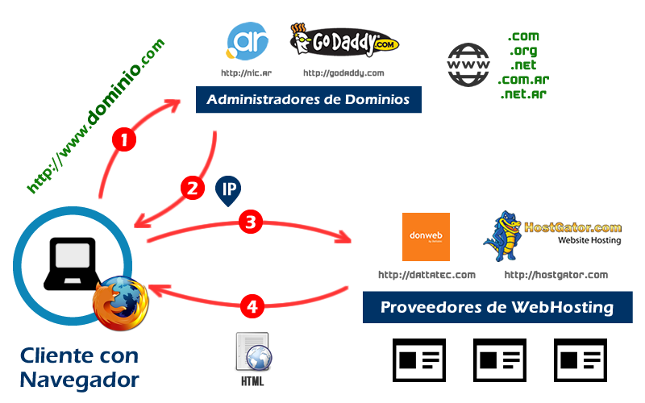

#JTLDW
Sistemas de Gestión de Contenidos
Disertante Ing. Farid Astorga / @faridastorga
¿De que vamos a hablar?
CMS
Content Management System
Organización
Posee una estructura
sólida para su contenido.
Publicación de Contenidos
Los contenidos son
totalmente editables y modificables.
Escalabilidad
Agregar servicios de
valor a los usuarios.
Administración de usuarios
Es jerárquica y posee
niveles de accesos.
Diseño y aspecto estético
El contenido va separado de la forma de presentarlo.
Navegación y menú
Integración entre el
contenido y la forma de accesarlo.
Administrar multimedios
Gestión de archivos
multimedia 2.0
Disposición de módulos
La posición de los módulos puede acomodarse como se prefiera.
Implementaciones
- Comercio Electrónico.
- Portales de Noticias.
- Comunidades Sociales.
- Sitios Web Personales.
- Sitios Web Empresariales.
Objetivos de la Jornada
- Presentar los conceptos fundamentales
- Implementar un CMS > Tipo profesional
Módulo 1
Conocimientos esenciales
Internet

Arquitectura
Entorno de Trabajo
Alojamiento Web
Acceso al Servidor

Servidor Web

En la realidad...
Servidores en
Torre, Rack o Blade
Rack de Servidores

Centro de Datos
Nombre de Dominios

Servidores DNS

Integramos un poco 1

Integramos un poco 2
Módulo 2
Introducción a los CMS
Módulo 3
CMS Joomla! A fondo
Módulo 4
Publicación en Internet
Poner código o comandos...
function cooperar (asociado) {
if( noLabura (asociado) ) {
var resultado = realizarVotacion (mosiones);
for( var i = 0, len = coop.asociados; i < len; i++ ) {
var asociado = asociado[i];
if( asociado.asociado[i].voto ) {
printf (asociado.asociado[i].voto);
}
}
}
}
Slides
Not a coder? No problem. There's a fully-featured visual editor for authoring these, try it out at http://slid.es.
Point of View
Press ESC to enter the slide overview.
Hold down alt and click on any element to zoom in on it using zoom.js. Alt + click anywhere to zoom back out.
Works in Mobile Safari
Try it out! You can swipe through the slides and pinch your way to the overview.
Fantastic Ordered List
- One is smaller than...
- Two is smaller than...
- Three!
Transition Styles
You can select from different transitions, like:
Cube -
Page -
Concave -
Zoom -
Linear -
Fade -
None -
Default
Themes
Reveal.js comes with a few themes built in:
Default -
Sky -
Beige -
Simple -
Serif -
Night
Moon -
Solarized
* Theme demos are loaded after the presentation which leads to flicker. In production you should load your theme in the <head> using a <link>.
Global State
Set data-state="something" on a slide and "something"
will be added as a class to the document element when the slide is open. This lets you
apply broader style changes, like switching the background.
Custom Events
Additionally custom events can be triggered on a per slide basis by binding to the data-state name.
Reveal.addEventListener( 'customevent', function() {
console.log( '"customevent" has fired' );
} );
Image Backgrounds
<section data-background="image.png">Repeated Image Backgrounds
<section data-background="image.png" data-background-repeat="repeat" data-background-size="100px">Background Transitions
Pass reveal.js the backgroundTransition: 'slide' config argument to make backgrounds slide rather than fade.
Background Transition Override
You can override background transitions per slide by using data-background-transition="slide".
Clever Quotes
These guys come in two forms, inline:
“The nice thing about standards is that there are so many to choose from”
and block:
“For years there has been a theory that millions of monkeys typing at random on millions of typewriters would reproduce the entire works of Shakespeare. The Internet has proven this theory to be untrue.”
Intergalactic Interconnections
You can link between slides internally, like this.
Fragment Styles
There's a few styles of fragments, like:
grow
shrink
roll-in
fade-out
highlight-red
highlight-green
highlight-blue
current-visible
highlight-current-blue
Spectacular image!

Export to PDF
Presentations can be exported to PDF, below is an example that's been uploaded to SlideShare.
Take a Moment
Press b or period on your keyboard to enter the 'paused' mode. This mode is helpful when you want to take distracting slides off the screen during a presentation.